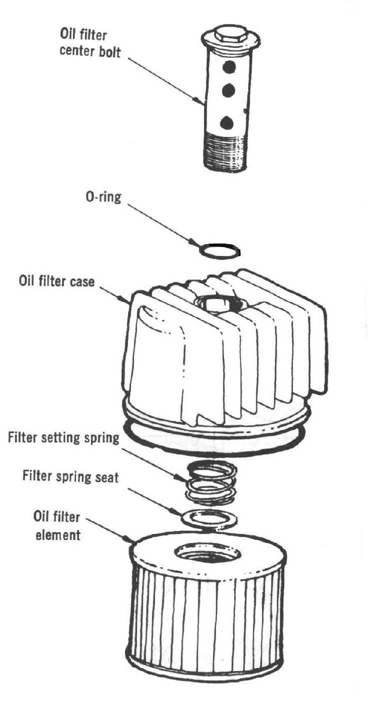

Commuter four-strokes clean their oil in one or more of three ways. A strainer is a wire mesh screen near the drain plug. A centrifugal filter is a spinning cup on the crank end, behind the right side cover, that throws dirt to its outer wall. A cartridge or spin-on filter is a paper element in a housing or can. The K-Light 125 has a strainer screen and a centrifugal filter rotor.
What it does
The strainer stops large bits reaching the oil pump. The centrifugal filter or paper element catches fine dirt and metal before oil reaches the bearings. When a filter is full, oil bypasses it or flow drops, and wear speeds up.
Signs it is worn or failing
- Oil turns black very soon after a change.
- Oil warning light on.
- Metal particles in the oil or on the screen.
- A torn or holed strainer screen.
- Types: spin-on can, paper element in a cover, metal screen, and centrifugal rotor. A coarse screen can still block and cut oil to the head.
- A spin-on filter over-tightened or crushed by a strap wrench can leak. A one-hole element fits only one way, and fitted backwards it blocks the oil.
- See Change a spin-on or paper oil filter, Clean the oil screen in the drain plug or filter chamber and Clean a centrifugal oil filter.
When to replace it
Clean the strainer at every oil change. The K-Light schedule cleans the oil filter screen at the first service and every 6000 km. Replace a paper cartridge at the interval in your bike's manual; centrifugal filters are cleaned out by a workshop.
What to match when buying
- Know which type your bike has before buying. A generic filter is not a substitute for a strainer or centrifugal filter.
- Strainers: match screen size, spring and the cap O-ring.
- Cartridges and spin-ons: match the part number, height, diameter, thread and the bypass valve. Fit new O-rings with every filter.
- Fake filters can look right outside but have thin paper or no bypass valve. Buy from a known maker or dealer and check the print quality and the box seal.
Fitting notes
- Home job with the oil change: Change the engine oil and clean the strainer.
- On the K-Light the screen and spring can drop out when the cap comes off; catch them.
- Do not use a cap torque from another bike or a different cover. Centrifugal filter service needs the right side cover off and the exact model procedure.
Reference (K-Light 125)
| Item | Value | PDF page |
|---|---|---|
| Filter type | strainer screen plus centrifugal rotor | 195 |
| Screen service | clean at 300 km, then every 6000 km | 51 |